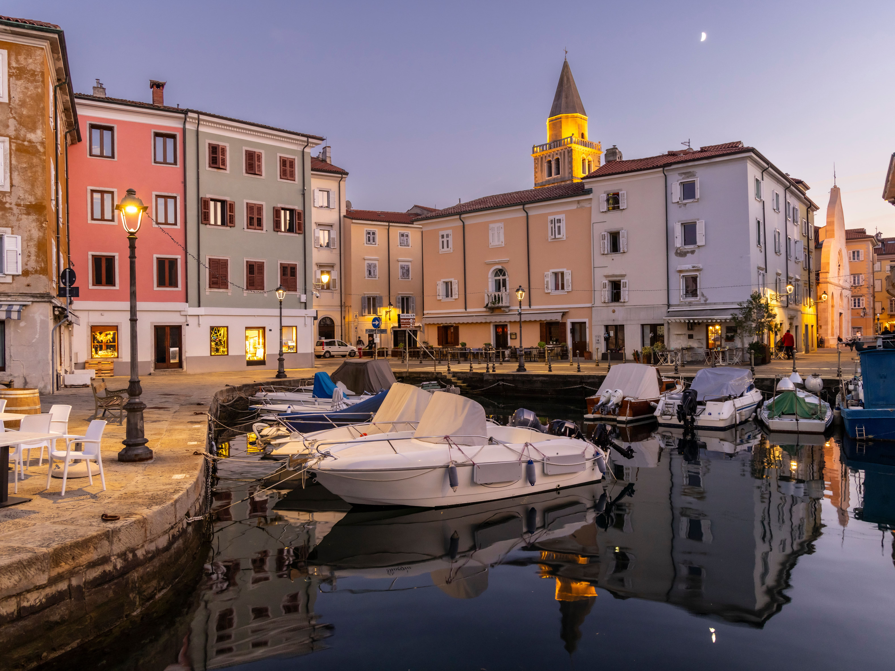

Startseite › Muggia
Muggia
Auf der anderen Seite der Bucht von Triest liegt Muggia, Italiens kleine Ecke Istriens. Pastellfarbene Häuser, ein ruhiger Hafen und enge Gassen tragen die Erinnerung an Jahrhunderte venezianischer Herrschaft.
Hier wird die Tour langsamer: ein Spaziergang durch das historische Zentrum, ein Blick von oben und Zeit, am Wasser in Ruhe zu essen.

Was Sie erwartet
- Zeit für das Mittagessen (nicht im Preis enthalten)
- Spaziergang durch die Altstadt mit lokalem Guide
- Kurze Fahrt von Triest, abseits der Menschenmassen
Erleben Sie es auf unserer Tagestour
Muggia ist einer von drei Stopps auf der Minivan-Tagestour von Triestour in der Kleingruppe ab Triest. Höchstens 8 Gäste, €109 pro Person.
Platz reservierenEbenfalls auf der Tour: Schloss Miramare · Burg Socerb